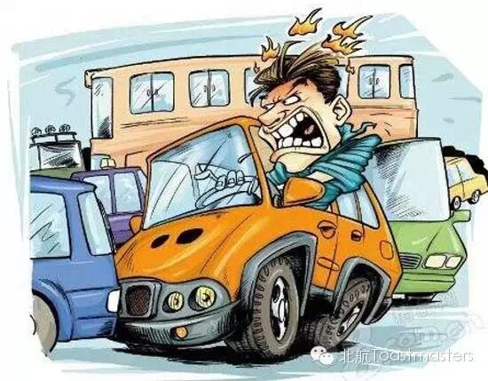
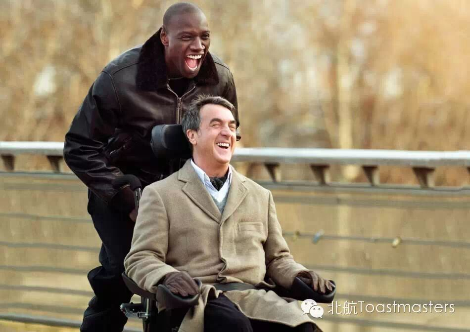
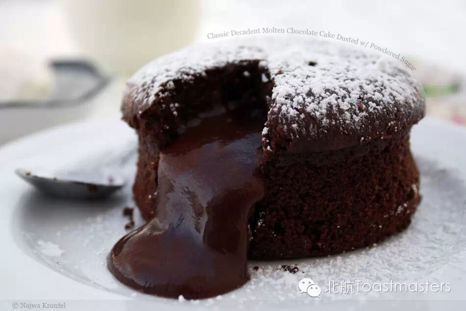
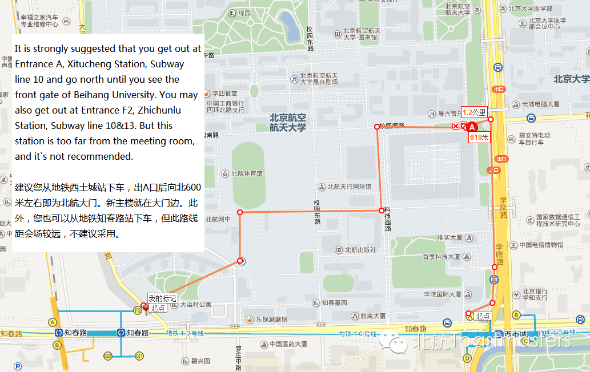

Time:19:30-21:30,Friday,May.22
Venue:Room B208,New Main Building,Beihang University
Table Topic

Toastmaster:Bowen
Table Topic Master:Summers
Can you drive? Have you ever met angry drivers on the road. Traffic jam makes people lose patience; crowded cars get drivers mad. What if you are the aggressive driver? Come here and discuss with us. Analyze your driving style and whether you are susceptible to road rage; then consider changing your own driving habits.
Prepared speeches
1.The Intouchables
CC2 Nancy
Imagine a wealthy, physically disabled old man, who lost his wife in an accident and whose world is turned upside down when he hires a young and humored ex-con as his caretaker. What happened between two widely different people? What does "Intouchables" mean? Let's view this uncommon story in Nancy's perspective.

2.High Efficiency but Low Effect
CC3 Mauna Loa
Why do we always seem busy? Why do we always feel that the time is not enough? Why do we usually feel our efficiency is high, but effect is far less than what we have expected? Are there ways to solve these problems? Please expect to listen Mauna Loa's speech.
3.How to Make a French Chocolate Lava Cake
CC3 Grace
The chocolate lava cake recipe is a sure fire hit with chocolate lovers and a very popular dessert on French tables. Chocolate lava cake gets its name because it has a soft, sweet center. Following Grace and served in individual ramekins, you can dress this easy cake up as gracefully as you wish.

时间：每周五晚7：30-9：30
地点：北航新主楼B座208
联系人： Keven 15810539853
Map

Who are we?
According to Wikipedia, Toastmasters International (TI) is a nonprofit educational organization that operates clubs worldwide for the purpose of helping members improve theircommunication, public speaking, and leadership skills.
See you in the meeting!
Here is the two-dimension code of ourWeChat Subscription.
欢迎关注微信公众平台：北航Toastmasters
https://mp.weixin.qq.com/s/5UNDAccxJsSYT_7z2EApLA
本页为抢救式本地归档，图文已永久保存。